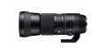

器材库 > 35mm画幅AF变焦镜头 / 150-600/5-6.3 DG OS HSM / Contemporary > 150-600/5-6.3 DG OS HSM | Contemporary

详细规格
镜头类型
超远摄变焦镜头
发布日期
2014-09-15
焦距
150-600mm
最大光圈
F5-6.3
最小光圈
F22
镜头结构
20片/14组
光圈叶片
9片
最近对焦距离
280cm
最大放大倍率
5x倍
驱动马达
HSM（超声波马达）
滤镜口径
95mm
镜头卡口
Canon EF, Nikon F, Sigma SA, Sony E
防抖
是
颜色
黑色
尺寸
105 x 260mm
carl09532015-07-03 21:454.33 分
操作性 4.50耐用性 4.00性价比 5.00解像力 4.00色彩还原 4.50机械结构 4.00
九大行星2015-06-05 11:554.42 分
操作性 4.50耐用性 4.00性价比 5.00解像力 4.50色彩还原 4.50机械结构 4.00
产品图 / 样片
评测 / 相关文章
该产品暂无存档的评测文章